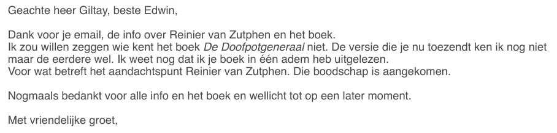

Prueba · Correo electrónico
El eurodiputado Ton Diepeveen a Giltay, 10 de diciembre de 2024
La cita que figuraba en el sitio web empleaba la formulación que el autor presentó a Ton Diepeveen el 25 de mayo de 2025 y que Diepeveen aprobó. Esa formulación figura a continuación en primer lugar; después, el mensaje original del 10 de diciembre de 2024 del que procede.
La formulación que aprobó, 25 de mayo de 2025
«Me gustaría incluir tus palabras como cita en la sección de reseñas de mi sitio web dedoofpotgeneraal.nl, al amparo del derecho de cita, para reflejar la dimensión internacional del caso descrito. Se trata de: “¿Quién no conoce De doofpotgeneraal? Lo leí de un tirón”. — Ton Diepeveen, LLM, eurodiputado» Página 1, la solicitud que el autor envió el 25 de mayo de 2025 a las 00:27. Diepeveen respondió esa misma mañana a las 07:25, en la parte superior del intercambio: «Geen probleem Edwin» (ningún problema, Edwin). En el correo, la formulación propuesta figura entre comillas; aquí, dentro de la cita, va entre comillas de segundo nivel. En el correo, la formulación y la línea con el nombre siguen a «Het gaat om:» (se trata de), cada una en una línea propia y sangrada; aquí esas líneas se han unido. Traducido del neerlandés; el texto original figura a continuación. De doofpotgeneraal es el título original neerlandés del libro El general del encubrimiento.
“Ik zou graag je woorden als quote opnemen in de recensiesectie van mijn website dedoofpotgeneraal.nl, onder citaatrecht, om de internationale dimensie van de beschreven affaire te weerspiegelen. Het gaat om: ‘Wie kent De doofpotgeneraal niet? Ik heb het in één adem uitgelezen.’ – Ton Diepeveen, LLM, Europarlementariër” Texto original
Su mensaje original, 10 de diciembre de 2024
«Yo diría: ¿quién no conoce el libro De Doofpotgeneraal? La versión que me envías ahora aún no la conozco, pero la anterior sí. Todavía recuerdo que leí tu libro de un tirón». Página 1, el mensaje del 10 de diciembre de 2024, citado al pie del intercambio. El correo escribe el título «De Doofpotgeneraal», en cursiva y con D mayúscula en la segunda palabra, mientras que el libro se titula De doofpotgeneraal. La primera frase termina sin signo de interrogación; la traducción añade los signos de interrogación. Las tres frases ocupan dos líneas, con un salto de línea en la segunda frase después de «ken ik nog niet» (aún no la conozco); aquí esas líneas se han unido. Traducido del neerlandés; el texto original figura a continuación. De doofpotgeneraal es el título original neerlandés del libro El general del encubrimiento.
“Ik zou willen zeggen wie kent het boek De Doofpotgeneraal niet. De versie die je nu toezendt ken ik nog niet maar de eerdere wel. Ik weet nog dat ik je boek in één adem heb uitgelezen.” Texto original

Por qué importa este documento
El 10 de diciembre de 2024, Giltay escribió a Ton Diepeveen, licenciado en Derecho y miembro neerlandés del Parlamento Europeo, acerca de Reinier van Zutphen, Defensor del Pueblo de los Países Bajos (Nationale ombudsman) y candidato al cargo de Defensor del Pueblo Europeo. Giltay adjuntó el PDF de la edición neerlandesa del libro. La respuesta llegó esa misma tarde. Diepeveen escribió que diría que todo el mundo conoce el libro, que aún no conocía la versión que se le acababa de enviar pero sí la anterior, y que todavía recordaba haber leído el libro de un tirón.
El 25 de mayo de 2025, Giltay le presentó una formulación abreviada y le pidió permiso para utilizarla en este sitio web con su nombre y su cargo. Diepeveen respondió esa misma mañana que no había ningún problema. La cita que figuraba en la sección de voces procede de este intercambio de correos electrónicos y se utilizó, por tanto, con su permiso.
Procedencia
- Documento
- Impresión de un mensaje de Gmail, dos páginas: la respuesta de Diepeveen del 25 de mayo de 2025, con el intercambio anterior debajo
- Remitente
- Ton Diepeveen (LLM), miembro del Parlamento Europeo, Partij voor de Vrijheid (NL), comisiones PECH, AGRI y JURI
- Destinatario
- Edwin Giltay
- Fecha
- 10 de diciembre de 2024, 13:16, el mensaje del que procede la cita
- Asunto
- «Re: Kanttekeningen bij Nederlandse kandidaat voor Europees ombudsman» (observaciones sobre el candidato neerlandés a Defensor del Pueblo Europeo)
- Intercambio
- Giltay a Diepeveen, 10 de diciembre de 2024, 12:07 · respuesta de Diepeveen el mismo día, 13:16 · solicitud de Giltay para poder citarlo, 25 de mayo de 2025, 00:27 · respuesta de Diepeveen, 25 de mayo de 2025, 07:25
- Autorización
- El 25 de mayo de 2025, Giltay le presentó la cita propuesta con mención de su nombre y le pidió que le avisara si tenía alguna objeción; la respuesta, esa mañana, fue «Geen probleem Edwin» (ningún problema, Edwin)
- Archivo adjunto
- El libro De doofpotgeneraal, adjunto al mensaje de Giltay del 10 de diciembre de 2024, 12:07
- Firma
- Logotipo del Parlamento Europeo, nombre, cargo, partido y comisiones, con las direcciones de las oficinas de Bruselas y Estrasburgo; el número de teléfono directo está tachado en esta copia
- Idioma
- Neerlandés
- Páginas
- 2
- Conservado por
- Archivo del autor
Citado en: la sección de voces hasta el 21 de octubre de 2026; desde entonces se conserva solo como prueba.
Ficha de prueba: https://
Documento: https://
Modificado por última vez el 26 de julio de 2026, consultado el 26 de noviembre de 2026.

Esta página es una ficha de prueba del libro El general del encubrimiento de Edwin Giltay y del sitio web que lo acompaña.